Метод активации: как достигать целей в 10 раз быстрее за счёт работы с подсознанием
За счёт метода активации и работы с подсознанием вам больше не придётся:
работать в ноль и постоянно чувствовать, что ничего не получается
винить себя за отсутствие результатов
чувствовать себя недостаточно хорошей
бесконечно пробовать новые способы, не понимая, почему они не работают
Вместо этого вы поймёте:
как именно вам расти в деньгах и аудитории
как перестать возвращаться к одним и тем же результатам
как принимать решения, которые действительно ведут вас к целям желаемой жизни
Наверняка, вы задавали себе эти вопросы:
Почему я столько учусь, прохожу курсы, а зарабатываю всё равно столько же?
Почему я знаю, как вести блог, но откладываю рилсы, а те, что выкладываю, не залетают?
Почему я хочу поднять чек, но каждый раз ставлю прежнюю цену, потому что страшно, что не купят?
Почему я снова и снова выбираю мужчин, с которыми мне плохо, хотя заранее вижу, чем это закончится?
Почему у других получается, а я делаю всё то же самое и стою на месте?
Потому что вашими решениями управляет глубинная установка — убеждение в подсознании, которое вы сами не видите. Именно она решает, сколько вы берёте за свою работу, выкладываете ли рилс и каких людей выбираете рядом с собой.
И пока вы её не найдёте, любые новые знания, практики и стратегии будут упираться в один и тот же потолок.
Сегодня я расскажу про метод активации, который помог мне открыть продюсерский центр и работать с крупными блогерами.
Который помог мне изменить мою жизнь до и после:
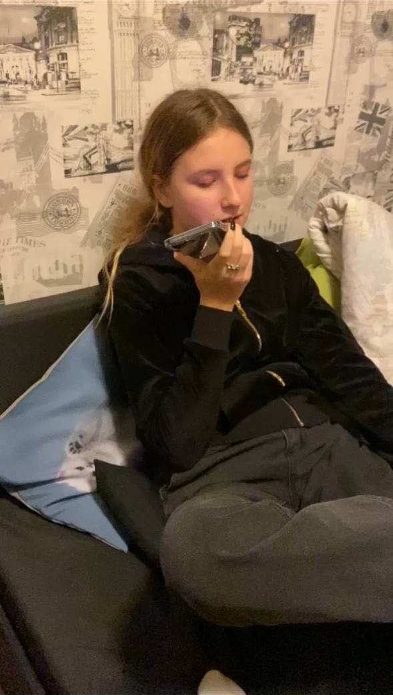
ДО
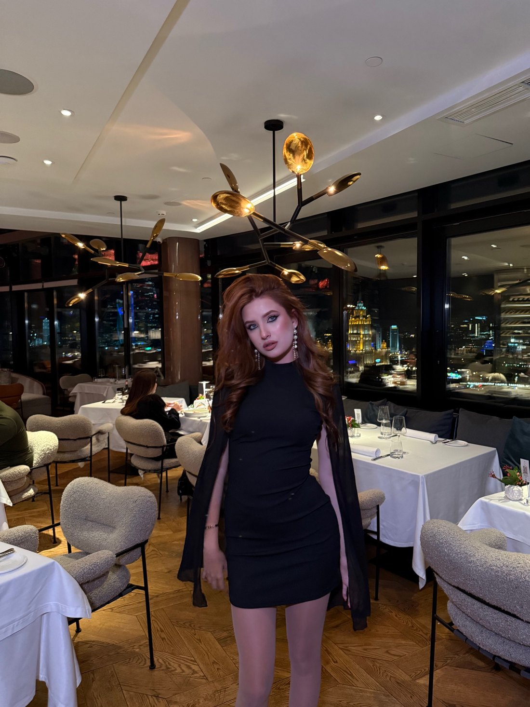
ПОСЛЕ
Оборот моего продюсерского центра:
120+ МЛН
за всё время работы мы помогли клиентам заработать столько
40+
проектов на стабильный ежемесячный доход
Например, полгода я ходила по кругу и не могла открыть продюсерский центр. А когда нашла одну установку и проработала её, открыла центр, и выручка выросла Х3. Что это была за установка, расскажу ниже.
Так я зарабатываю на любимом деле даже на маленьком блоге: делаю запуск на 1 млн рублей на охватах 200.
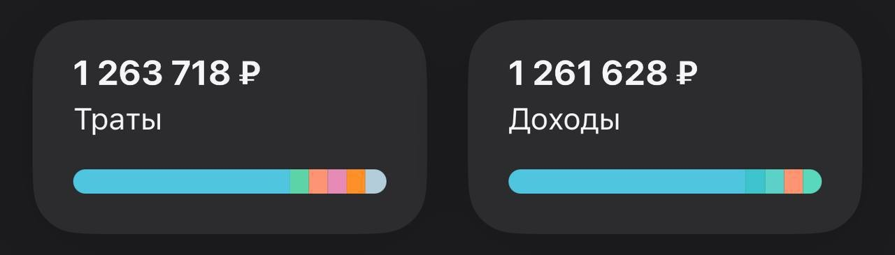
Так я за месяц выросла на +2000 подписчиков с помощью работы с бессознательным. Так я объездила полмира.
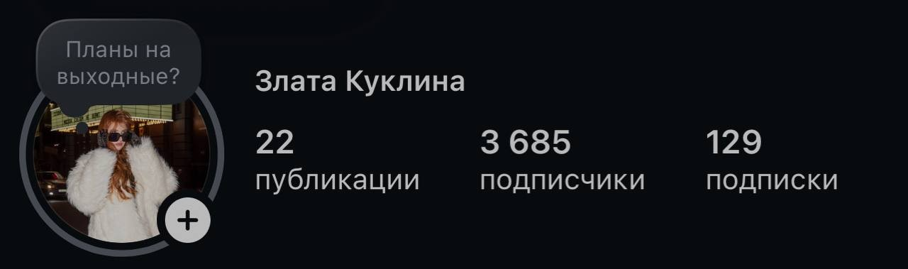
↓
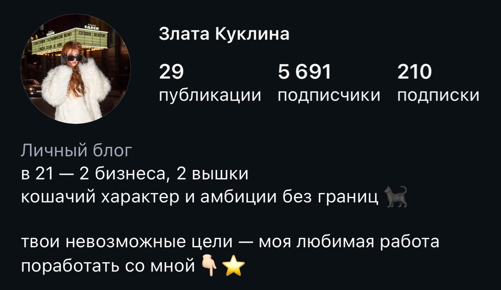
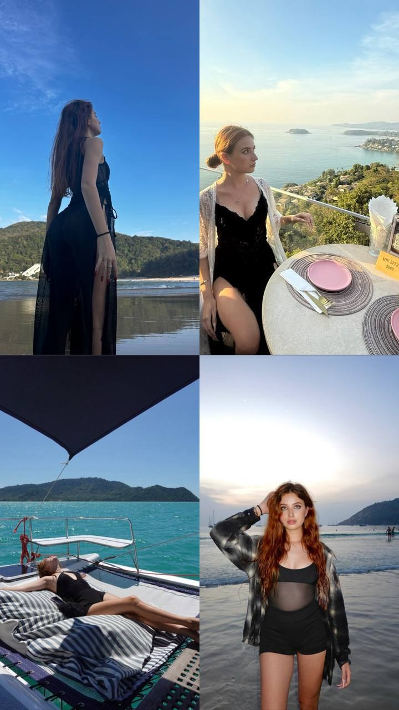
И так я научилась выбирать здоровых мужчин и здоровые отношения.
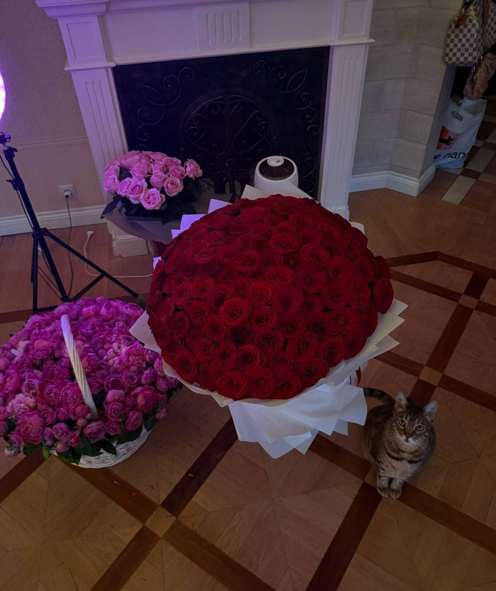
И так я купила квартиру.
Что такое метод активации?
Его суть простая: мы не даём вам новые знания и не заставляем больше работать. Мы находим глубинную установку, которая держит вас в старом сценарии, убираем её и сразу закрепляем новую в действиях.
Так моя ученица Ксюша за месяц и четыре созвона вышла с 22 тысяч на 150 тысяч и получила предложение на 200 тысяч плюс KPI
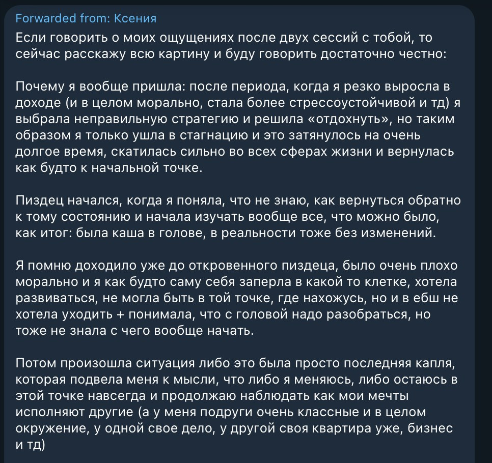
Так другая Ксюша, которой 3 года не одобряли ипотеку, за месяц купила квартиру
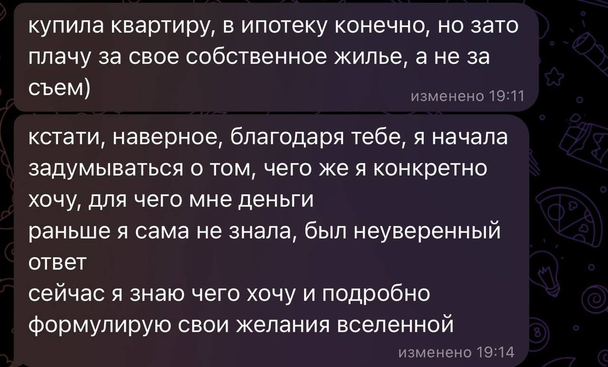
Так фотограф Настя за полторы недели сделала 600 тысяч
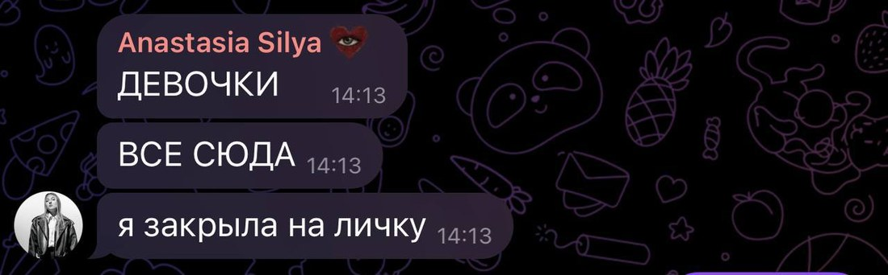
Поэтому дальше мы разберём: что такое подсознание, почему цели и визуализации не работают, пока установка стоит на месте, и как метод активации убирает её за несколько созвонов, а не за месяцы разговоров. А в конце покажу, за счёт чего именно практически каждая моя ученица за неделю–30 дней выросла в 10 раз.
ЧАСТЬ 1 ПОДСОЗНАНИЕ
УСТАНОВКА
Что такое подсознание и почему оно напрямую влияет на вашу жизнь?
Подсознание — это то, во что вы глубоко верите, как вы привыкли реагировать и как привыкли поступать. Именно оно решает, что вы замечаете, какие решения принимаете и что делаете.
Пример
Например, сознательно вы хотите зарабатывать миллион, но внутри боитесь, что большие деньги лишат вас свободы или помешают построить отношения. Из-за этого вы можете бояться повышать цены, не замечать возможности для роста или откладывать важные решения, даже не понимая почему.
Как глубинные установки мешают прийти к цели?
Вы можете ставить цели, визуализировать желаемое, медитировать и заставлять себя больше работать, но при этом снова и снова возвращаться к одним и тем же результатам.
Почему? Потому что установка работает как фильтр: одни возможности вы видите, а другие просто проходят мимо вас. Вы замечаете одни возможности, не видите другие и принимаете решения исходя из своих внутренних убеждений.
Пример
Например, вы хотите зарабатывать миллион, но внутри убеждены, что большие деньги небезопасны и могут разрушить вашу жизнь. Тогда вы можете сами не замечать, как отказываетесь от возможностей, боитесь действовать масштабнее или остаётесь в привычном сценарии.
Цепочка выглядит так:
Установка
↓
что вы замечаете
↓
что вы делаете
↓
какой результат получаете
Когда установка меняется, вы начинаете видеть то, чего раньше не замечали. Например, вместо убеждения «меня недостаточно» появляется ощущение «я охуенная». Вы начинаете иначе смотреть на себя и свою жизнь, замечать новые возможности, принимать другие решения и получать новые результаты.
Но сложность в том, что свою установку вы обычно не видите
Вы можете годами пытаться больше зарабатывать, строить отношения или становиться увереннее, но не понимать, почему снова и снова приходите к одному и тому же результату.
Знаете, что больше всего забирает энергию? Не сама неудача, а то, что вы не понимаете её причину. И в какой-то момент начинаете думать, что проблема в вас, хотя проблема в одной установке, которую вы просто не видите.
При этом недостаточно просто понять причину. Можно анализировать своё детство, обсуждать ситуации с психологом и осознавать свои реакции, но продолжать действовать по привычному сценарию.
Важно не только понять, почему вы так поступаете, но и убрать саму установку, чтобы вы начали поступать по-другому.
Почему недостаточно просто поставить цель, визуализировать деньги или начать больше действовать?
Пример
Например, вы хотите больше зарабатывать. Вы ставите цели, делаете практики на деньги, но продолжаете бояться проявляться, повышать цены или использовать новые возможности.
А иногда вы даже не понимаете, куда вам двигаться дальше. Вокруг могут быть тысячи возможностей, но вы их не замечаете, потому что в подсознании у вас стоит установка, что зарабатывать большие деньги небезопасно.
Из-за этого вы можете не замечать клиентов, которые готовы платить больше, не видеть новых направлений развития и продолжать действовать по одному и тому же сценарию.
И кажется, что причина в рынке, в нехватке знаний или в том, что вы мало стараетесь. Но причина в глубинной установке, которая незаметно влияет на решения и мешает пользоваться возможностями, которые уже есть. Когда мы находим её и убираем, результаты начинают меняться гораздо быстрее, чем человек ожидал.
История ученицы
Вот, например, у меня была ученица Ксюша, которая три года работала за копейки и не могла вырасти в доходе, потому что думала, что на рынке кризис и у людей нет денег. Из-за этого она постоянно была в тревоге, вечно экономила, урезала себя в базовых потребностях и страдала от этого на протяжении трёх лет. И она думала, что решит эту проблему, если пройдёт ещё одно обучение и получит ещё одну специальность.
Но мы начали внедрять метод активации и откопали глубинную установку, связанную с её системой семьи. Сама Ксюша думала, что у неё установка из разряда «не жили богато — нечего начинать». А на самом деле корень был другой: «если я начну зарабатывать, родители перестанут меня любить».
Не буду объяснять, как именно эта установка работала. Но как только мы её убрали, уже через три дня Ксюша начала работать с Кариной Нигай. Причём эту вакансию она нашла в том же чате, где искала всегда. Она уехала в путешествие, хотя очень давно не отдыхала.
А к завершению нашей работы, то есть за месяц и четыре созвона, Ксюша заработала 150 тысяч рублей, и ей предложили новую вакансию на 200 тысяч рублей плюс KPI.
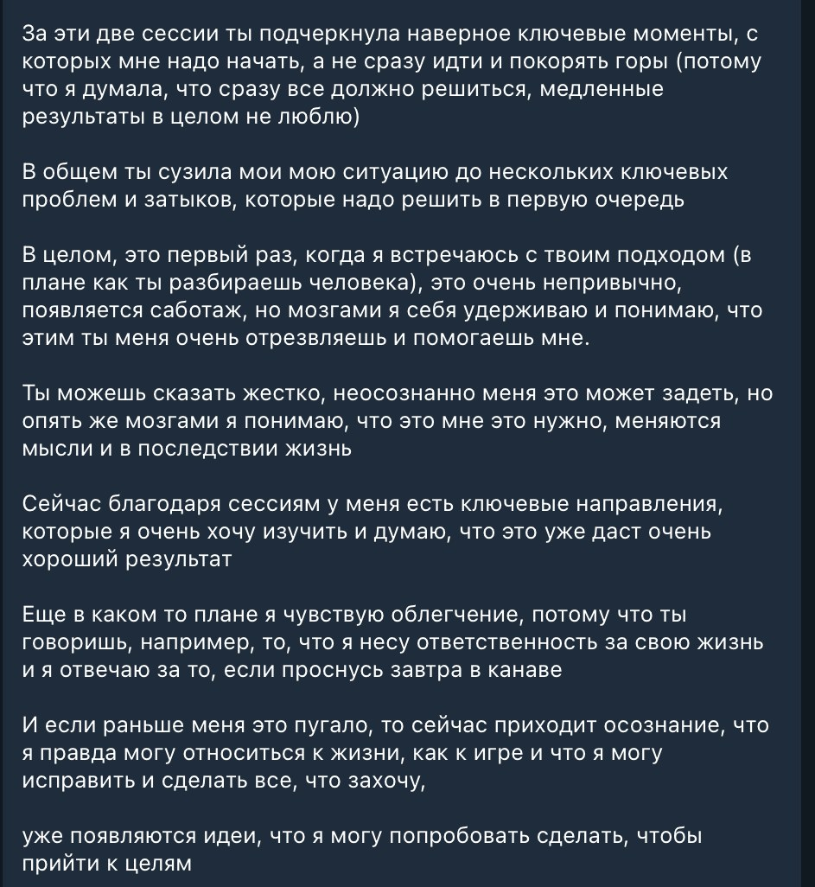
Ещё раз напомню, с каким запросом она пришла: на рынке кризис, нужны новые знания или пора уходить из сферы. Ей не понадобилось ни то, ни другое. Иногда не нужно годами менять внешние обстоятельства, искать новую профессию или получать очередные знания. Нужно найти установку, которая мешает видеть и использовать то, что уже есть.
История ученицы
Или вот у другой моей ученицы была установка: «Моя ценность зависит от того, что скажут другие».
Настя — фотограф, у неё уже была аудитория, но она не умела зарабатывать на блоге и зарабатывала достаточно мало. Личное обучение у неё стоило до 30 тысяч рублей. Ей казалось, что для высокого чека нужно больше опыта и одобрения.
Она пробовала поставить 60 тысяч, и продать не получилось.
Мы внедрили метод активации и нашли глубинную установку, из-за которой Настя не могла поднять чек и брать больше клиентов: она считала, что несёт ответственность за финансовые результаты каждого ученика. Если человек не получал результат, Настя считала себя плохим специалистом.
Из-за этого она пыталась вытянуть каждого, выгорала, не могла брать больше клиентов в работу, к ней приходили ученики, которые ждали, что она всё сделает за них, и боялась ставить высокий чек.
Как только мы убрали её глубинную установку, её личная работа вместо 30 тысяч стала стоить 150. И уже через полторы недели Настя сделала четыре продажи по 150 тысяч рублей — 600 тысяч.
Почему метод активации работает быстрее?
Метод активации помогает найти причины, которые вы можете не замечать годами, и изменить отношение к себе, деньгам и возможностям. Вам не нужно больше работать, больше учиться или ждать, пока накопится опыт. Когда меняется глубинная установка, меняется поведение. А когда меняется поведение, быстро меняются и внешние результаты.
Как работает метод активации и почему мои клиенты получают быстрые результаты?
Моя главная сила — я помогаю выявить глубинную причину проблемы, которую человек сам часто не видит.
Пример
Например, вы можете думать, что у вас нет денег, времени, что вы боитесь проявляться или не можете построить отношения. Но это лишь поверхностные проявления. Мне важно понять, почему вы на самом деле действуете именно так и какая глубинная установка управляет вашими решениями.
Я считываю, какая установка у человека стоит на самом деле, и не опираюсь только на то, что он сам о себе рассказывает. Благодаря этому мы можем быстрее перейти к сути запроса, не тратя месяцы на то, чтобы постепенно искать причину проблемы.
Дальше работа с установкой идёт по шагам:
1Выявляем глубинную установку
Во время разговора я помогаю определить не просто то, что вам мешает, а глубинную причину, из-за которой вы снова и снова приходите к одному результату.
Результат
В результате вы понимаете, что на самом деле мешает вам прийти к тому, чего вы хотите, а что было не главным.
Пример
Например, вы думаете, что, чтобы заработать больше денег, вам нужно изменить систему заработка или больше работать, а на самом деле ваша глубинная установка в подсознании — «мне опасно больше зарабатывать».
2Показываю, как эта установка мешает вам в жизни
Я помогаю увидеть, где вы сливаете энергию, какие решения принимаете под влиянием этой установки и какие возможности упускаете.
Пример
Например, если для вас небезопасно зарабатывать миллион, это может проявляться не только в страхе повысить цены. Вы можете выбирать клиентов, которые не готовы платить больше, отказываться от выгодных предложений или не замечать возможностей для роста.
Результат
После второго этапа вы уже начинаете видеть реальную картинку: где ваши слепые зоны, где вы подавляете себя, где утекает энергия, где не берёте денег, а должны.
3Убираем установку
Я не ограничиваюсь разговорами о проблеме, анализом прошлого или работой с мышлением. Для этого я использую энергетические практики и отвязки, после которых вы начинаете реагировать на привычные ситуации по-другому.
В результате мы меняем негативную установку на позитивную:
«Я не могу брать большие деньги за свою работу» = «Я ставлю цену, которую считаю нужной».
«Если я буду проявляться, меня будут осуждать» = «Моё проявление безопасно для меня».
4Закрепляем в действиях
Для меня важно не просто выявить установку и поговорить о ней. Мы смотрим, как изменения проявляются в жизни, и я даю конкретные задания, которые помогают закреплять новый способ действовать.
Если вы боитесь проявляться, мы не только убираем страх, но и сразу выводим вас в блог. Мне важно закрепить новую установку в действиях, а не только в голове, поэтому я даю практическое задание, которое поможет вам сделать шаг в вашем запросе и утвердить новый сценарий в жизни.
Боялись продавать дорого — продаём дорого)
Боялись проявляться — идём проявляться)
И эти действия мы делаем уже из другого состояния и с изменёнными установками, поэтому даются они легко.
Почему я работаю только в длительном сопровождении?
Потому что одного осознания проблемы недостаточно. После того как человек обнаруживает глубинную установку, ему ещё предстоит проработать её и научиться действовать по-новому.
На это требуется разное количество времени. В среднем на одну установку уходит 4–6 созвонов.
Я не беру на разовую консультацию, чтобы просто назвать человеку его проблему и оставить его разбираться с ней самостоятельно. Мне важно пройти весь процесс: найти установку, убрать её и закрепить изменения действиями.
Важно
При этом результат зависит и от включённости самого человека. Недостаточно просто прийти на созвоны — важно выполнять задания и применять изменения в жизни.
Моя задача — помочь вам увидеть то, чего вы раньше не замечали, убрать глубинную установку и прописать вместе с вами рабочую стратегию действий.
А дальше мы смотрим, как это отражается на вашей реальности и приближает вас к желаемому результату.
Дальше кейсы учениц: на них видно, как работа с глубинными установками отражалась на их деньгах, реализации и отношениях. И обратите внимание: не все они эксперты, обе Ксюши, например, работают в найме.
ЧАСТЬ 2 ТОЧКА А → ТОЧКА Б
КЕЙСЫ
Кейсы: точка А → точка Б
Ксюша. Доход с 22 тысяч до 200 тысяч, работа с крупными блогерами
Точка А. Ксюша пришла с проблемой, что не может найти работу. Три года она работала сценаристом и зарабатывала 22 тысячи. Её запрос был: на рынке кризис, нужны новые знания или пора уходить из сферы.
Что мы делали. Внедрили метод активации: пошли глубже запроса и нашли установку «если я начну зарабатывать, родители перестанут меня любить». Убрали её, и через три дня Ксюша начала работать с Кариной Нигай.
Точка Б. За 4 сессии доход стал 200 тысяч. Ксюша начала работать с крупными блогерами.
Рост ×10: из 22 тысяч в 200 тысяч
Ещё одна Ксюша. Купила квартиру, хотя три года не одобряли ипотеку
Точка А. Ксюша всю жизнь хотела купить собственную квартиру, но ей три года не одобряли ипотеку. Она даже не понимала, как накопить на первоначальный взнос, хотя зарабатывала 100–150 тысяч рублей в месяц.
В процессе работы мы нашли установку, что иметь собственное жильё и брать на себя обязательства по ипотеке небезопасно. То есть сознательно Ксюша хотела квартиру, но на уровне подсознания у неё стояла установка, которая противоречила её желанию.
Что мы делали. Внедрили метод активации: начали убирать эту установку и менять то, как она привыкла поступать. В процессе работы Ксюше попалась рассылка с программой, где первоначальный взнос составлял не миллион рублей, а всего 300 тысяч. Деньги на этот взнос у неё уже были. Мы начали подавать заявки на ипотеку, и человеку, которому три года отказывали, одобрили ипотеку сразу. Причём на выгодных льготных условиях, а не под 27–29%.
Точка Б. За месяц работы со мной Ксюша купила квартиру. Её слова: «купила квартиру, в ипотеку конечно, но зато плачу за свое собственное жилье, а не за съем)».
А дальше она добавила: «кстати, наверное, благодаря тебе, я начала задумываться о том, чего же я конкретно хочу, для чего мне деньги. Раньше я сама не знала, был неуверенный ответ. Сейчас я знаю чего хочу и подробно формулирую свои желания вселенной».
Настя, фотограф. Чек с 30 до 150 тысяч и 600 тысяч за полторы недели
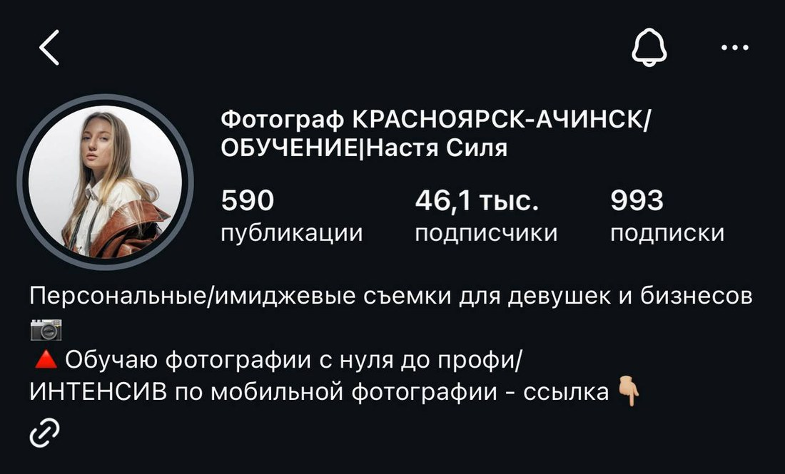
Точка А. У Насти уже была аудитория, но она не умела зарабатывать на блоге. Личное обучение стоило до 30 тысяч, на 60 продать не получилось. Она выгорала, пытаясь вытянуть каждого ученика, и боялась ставить высокий чек.
Что мы делали. Внедрили метод активации: нашли установку «моя ценность зависит от того, что скажут другие». Показали, как этот сценарий проявляется в её реальности: где она не берёт деньги, хотя должна, где сливает энергию и удерживает себя маленькой. Заменили её на «я ставлю цену, которую считаю нужной» и закрепили в действии: практическое задание на продажи по новой цене. Из нового состояния это давалось легко.
Точка Б. Личная работа поднялась с 30 до 150 тысяч рублей. Уже через полторы недели Настя сделала четыре продажи по 150 тысяч рублей — 600 тысяч. И сделала успешный запуск.
Ася. От рилсов, которые не залетали, к 102 тысячам охвата
Точка А. Ася хотела вести блог, но не вела, а рилсы, которые она выкладывала, не залетали: контент не набирал охватов, работа не давала результата.
Что мы делали. Внедрили метод активации: убрали глубинную установку, которая удерживала её в старом сценарии и не позволяла проявляться, и закрепили новое поведение практическими заданиями. Из нового состояния ей удалось начать вести блог и делать рилсы так, что они стали залетать.
Точка Б. Ася начала вести блог, рилсы залетают — на скриншотах 102 тысячи и 28,5 тысячи охвата. И она получила повышение в работе, а бонусом еще улучшения в своих отношениях.
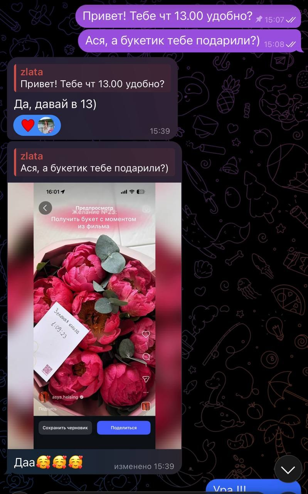
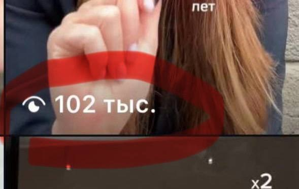
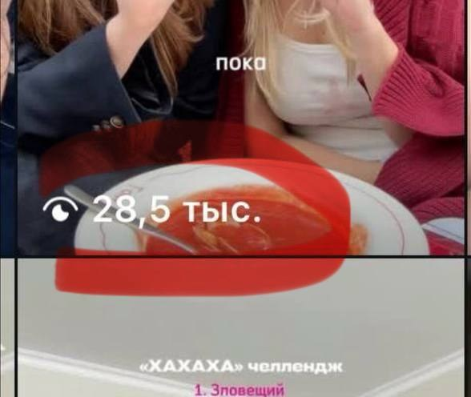
Алиса. С нулевого дохода до продюсера крупных блогеров и запусков на 600 тысяч
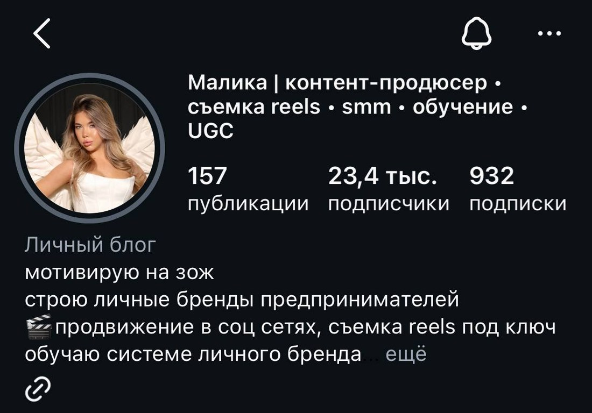
Точка А. У Алисы был доход 0. Она не работала с крупными проектами и не понимала, как выйти на этот уровень.
Что мы делали. Внедрили метод активации: нашли и убрали установку, которая не давала ей проявляться и брать деньги за свою работу, а затем закрепили новый сценарий действиями. Алиса начала работать продюсером блогеров крупных проектов и делать запуски.
Точка Б. Алиса стала продюсером блогеров крупных проектов. Сделала запуски на 600 тысяч рублей.
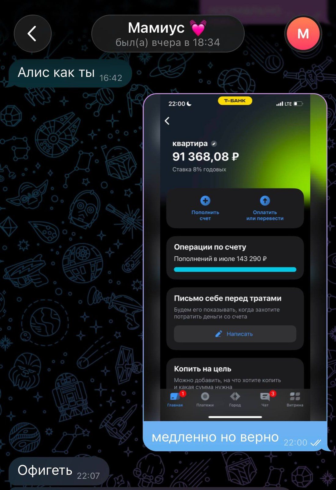
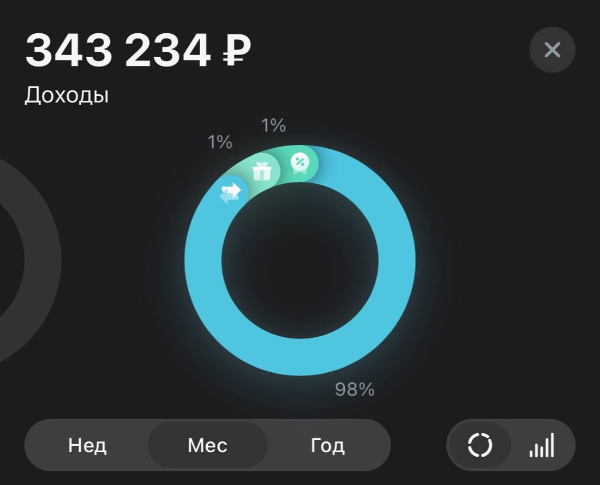
Алиса
0:56
Как проходит наша работа: 4 этапа метода активации
И эти четыре этапа работают только вместе. Без энергии человек не дойдёт до проработки. Без проработки установки стратегия останется заметкой в телефоне. А без действий новая установка не закрепится, и через месяц вы вернётесь в старый сценарий.
1Делаем чекап и возвращаем энергию
Пример
Например, у вас замкнутый круг: вечером пишете огромный список дел, утром просыпаетесь, ничего не делаете и вините себя. И так годами. Человек без энергии не сделает ни одного пункта. Сначала возвращаем баланс — потом планомерно двигаемся и получаем результат, а не пишем заметочки и не кормим себя иллюзией.
На первом созвоне я разбираю ваши старые решения: что у вас хорошо получается, что не получается и какие действия годами не вели вас к цели. Параллельно смотрим, что забирает у вас энергию — и в обычной жизни, и в энергетическом плане.
Делаем отвязки от чувства вины, от партнёров, от друзей, от старых коллег и от ситуаций, где вы промолчали. Они снимают ощущение вины — и это даёт огромный буст. Потому что человек без сил не может даже нормально думать о целях.
Результат
В результате вы возвращаете свою энергию и направляете её на деньги, реализацию и свои цели.
Я полноценно отвязалась от мужчин и вернула себе энергию. Впервые за полтора года я забыла бывшего и начала встречать достойных. Теперь, когда я выхожу на улицу, на меня всегда обращают внимание, хотя я всего лишь отвязалась с помощью техник отвязки.
А после практики на чувство вины я подняла чек x3.
2Находим глубинные установки, которые вам мешают
Пример
Вам кажется, что надо больше работать или пройти ещё одно обучение. Но навык у вас уже есть, и на нём уже можно зарабатывать. Деньги на обучение уходят, а результат не приходит, потому что «я ещё недостаточно хороша, когда-нибудь потом». Проблема в установке, а не в количестве усилий.
На втором созвоне я считываю, почему именно в вашей сфере не получается прийти к результату. У каждого это своё: стыд, желание быть хорошей девочкой, страх, что не примут.
Результат
Мы прорабатываем эти установки, и вы начинаете понимать, какими конкретно действиями отдаляете себя от денег, отношений, медийности. В результате вы видите, как принимаете решения, и уже можете не возвращаться в старый круг. А новая установка начинает подтверждаться вокруг вас ещё до того, как вы что-то сделали.
Моя история
Помните, я обещала рассказать про свою установку?
Когда-то я работала продюсером и запускала по три-четыре проекта в день, но всё делала руками: лид-магниты, сценарии, всё. Я хотела свой продюсерский центр, где за меня работают другие продюсеры, которых я обучила. На это нужны были деньги.
Полгода я ходила по кругу. А потом поняла: у меня стоит установка, что делегировать мне небезопасно, что я должна всё контролировать сама. Пока я её не проработала — денег не было.
Как только проработала — я взяла кредит и открыла продюсерский центр. Выручка выросла x3. До центра я зарабатывала миллион рублей, первые три месяца после открытия — чистыми два с половиной–три миллиона.
3Распаковываем сильные стороны и собираем новую стратегию
Пример
Например, вы думаете: «Я недостаточно дисциплинированна». Нет, вам нужен ассистент. Скидываете ему задачи, занимаетесь тем, что приносит деньги, зарабатываете в десять раз больше.
Я распаковываю ваши сильные качества, и мы вместе прописываем стратегию: какие шаги приближают вас к цели, какие мешают и как прийти к ней именно за счёт того, что у вас уже хорошо получается.
Моя история
Меня всю жизнь называли ленивой: я ничего не могу сделать сама, мне всё надо свесить на других. Я считала это своей слабой стороной и пыталась вылечить это дисциплиной — работать больше, упираться.
Но это оказалась моя сильная сторона. Я не «ленивая» — я умею управлять людьми и не умею делать мелкие задачи. Стоило это принять — и вся моя работа изменилась: я открыла продюсерский центр, где работаю не я. Появился ассистент, который забрал ряд задач, я занялась только тем, что приносит деньги — и кратно выросла в деньгах.
4Закрепляем новую установку в действиях
Пример
Все знают, как вести блог. Но пишут идеи для рилс и ждут идеального момента. Мы переводим это в действие и контролируем состояние — вместо того чтобы оттягивать на десять лет.
Со второго-третьего созвона мы начинаем действовать. Кто не выкладывал Reels, начинает выкладывать. Кто боялся повышать чек, повышает.
В отличие от обычной проработки в психологии, мы не останавливаемся на самой установке, а сразу закрепляем её на практике по шагам, которые прописали вместе. В результате по новой стратегии вы видите новые результаты: ролики начинают залетать, приходят деньги, в жизни появляются другие люди и отношения.
Я всю жизнь мечтала вести блог, и что-то меня каждый раз останавливало. Я нашла у себя установку: выходить в Instagram мне в принципе небезопасно — у меня недоверие к людям в жизни, и к подписчикам тоже.
Поменяла установку — и сразу начала выкладывать рилсы. Пятый рилс набрал 300 тысяч охвата и принёс мне три тысячи подписчиков.
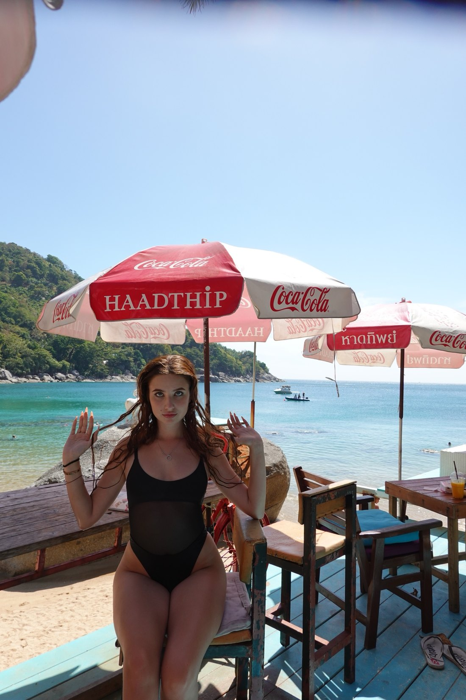
Поэтому большинство и топчется на месте годами: они чинят по одному кусочку. Идут на очередное обучение, делают практики на деньги, ходят к психологу, заставляют себя дисциплиной, а установка остаётся на месте и снова возвращает их к тому же результату.
Что у вас будет после внедрения метода активации?
Энергия, которую вы направляете на свои цели, а не на чувство вины и старые ситуации
Понимание, какие решения годами держали вас в замкнутом круге
Проработанные глубинные установки, которые мешали прийти к цели в деньгах, блоге и отношениях
Стратегия на основе ваших сильных сторон и конкретные шаги, которые вы уже делаете
И главное — первые результаты уже в ближайшие недели, потому что вы сразу идёте в действие, а не годами прорабатываете прошлое.
Почему метод активации работает быстрее, чем работа с обычным психологом?
Метод активации принципиально отличается от работы обычного психолога — скоростью, глубиной и тем, что каждый разбор сразу подкрепляется действием.
Я считываю установки. Психологу нужно время, чтобы человек ему доверился, и на поиск одной установки уходит два-три месяца. Я установки считываю, и работа идёт намного быстрее.
Каждый разбор подкрепляется действиями и практиками, потому что так меняются бессознательные установки.
Мы не ждём, пока вы начнёте действовать. Мы меняем установку и закрепляем её в действиях.
Я работаю лично с вами, а не даю готовые уроки, потому что установка у каждого своя.
Как внедрить метод активации?
Пока установка стоит на месте, она продолжает решать за вас каждый месяц: вы снова ставите прежнюю цену, снова откладываете рилс, снова выбираете знакомый сценарий в отношениях. Ксюша так провела три года, работая за копейки. Я полтора года не могла забыть бывшего. И это время уже никто не вернёт.
Чтобы зарабатывать больше, расти в аудитории и строить здоровые отношения, не нужно:
✕годами разбирать детство
✕проходить ещё одно обучение
✕заставлять себя работать через силу
Можно найти установку, которая держит вас на месте, и закрепить новую в действиях:
✓поднять чек и продавать без страха, что не купят
✓начать выкладывать рилсы и расти в аудитории
✓выбирать людей и отношения, в которых вам хорошо
✓направлять энергию на свои цели, а не на чувство вины
Если хотите внедрить метод активации, чтобы в 20–50 раз вырасти в доходе, начать расти в аудитории, продавать за высокий чек и в целом быстрее достигать своих целей, а не стоять годами на месте, жмите на кнопку